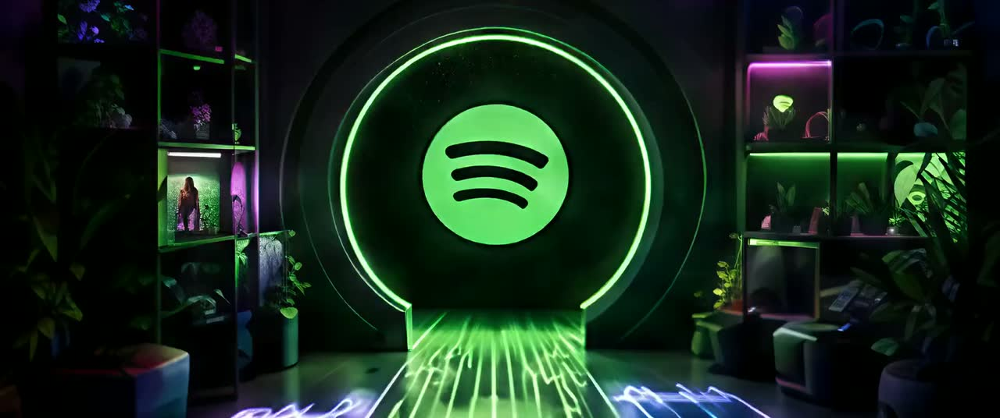

Mohamed Mahmoud Picturesاستوديو محمد محمود
presents · a scroll-cinema productionيقدّم · إنتاج سينما التمرير
The Albumالألبوم
LIVE PLATE · SIDE A/1 · 150 FRAMES · 1600×670 · SCOPE 2.39:1لقطة حيّة · الوجه أ/١ · ١٥٠ إطارًا · ١٦٠٠×٦٧٠ · سكوب ٢٫٣٩:١
Prologue · The room, photographedالبرولوج · الغرفة، مصوَّرة
Before anyone puts a record onقبل أن يضع أحدٌ أسطوانة
One room, six moves, and the film never leaves it. This is the first: the dark resolving into shelves, a wall, a deck — and the mark waiting up there like a held breath.غرفةٌ واحدة، وستُّ حركات، ولا يغادرها الفيلم أبدًا. هذه أولاها: العتمة تتحوّل رفوفًا وجدارًا وجهازًا — والعلامةُ تنتظر في الأعلى كنَفَسٍ محبوس.
168 FRAMES · 1280×536 · 32→38 MM · f/2.8١٦٨ إطارًا · ١٢٨٠×٥٣٦ · ٣٢→٣٨ مم · f/2.8
Rendered · before the first barمُصيَّر · قبل أول مازورة
The room, and one green lineالغرفة، وخطٌّ أخضر واحد
Room 6 at night: concrete, a slat ceiling, a bench, a deck. Nothing is playing yet. The line on the wall is what silence looks like when something is still listening.الغرفة ٦ ليلًا: خرسانة، وسقفٌ من الشرائح، وطاولة، وجهاز. لا شيء يُعزف بعد. والخطُّ على الجدار هو شكلُ الصمت حين يبقى أحدٌ منصتًا.
216 FRAMES · 1280×536 · 24→28 MM · f/5.6٢١٦ إطارًا · ١٢٨٠×٥٣٦ · ٢٤→٢٨ مم · f/5.6
Rendered · 24 mm, the whole setمُصيَّر · ٢٤ مم، المشهد كاملًا
Everything here is a real objectكلُّ شيءٍ هنا جسمٌ حقيقي
Bench, monitors, rack, stool, cable — geometry at true metric scale, lit by six practicals and photographed on a physical camera, so the shadows are solved rather than drawn.الطاولة، والسمّاعات، والرفّ، والمقعد، والكابل — هندسةٌ بمقياسٍ متريٍّ حقيقي، يضيئها ستةُ مصادر وتصوّرها كاميرا فيزيائية، فالظلالُ محسوبةٌ لا مرسومة.
144 FRAMES · 1280×536 · 65→85 MM · f/4١٤٤ إطارًا · ١٢٨٠×٥٣٦ · ٦٥→٨٥ مم · f/4
Rendered · Cycles path traceعرضٌ مُصيَّر · تتبُّع مسار Cycles
The needle comes downالإبرة تنزل
The groove is real relief — a sine of the radius driving the surface normal — so the specular sweep across the record is doing exactly what light does on vinyl. Contact lands on the downbeat.الأخدود نتوءٌ حقيقي — جيبُ نصف القطر يقود مُتَّجهَ السطح — فيفعل الوميضُ المنساب على الأسطوانة ما يفعله الضوء على الفينيل تمامًا. ويقع التلامس على النبضة الأولى.
The Albumالألبوم
Spotify Pulse — six acts in one room, and a side you fall through سبوتيفاي پَلس — ستة فصول في غرفة واحدة، ووجهٌ تسقط فيه
Silence has a lineللصمت خطٌّ واحد
Out of the dark studio field, a flat line waits. One green heartbeat claims the silence. من حقل الاستوديو المعتم ينتظر خطٌّ مستقيم، ونبضة خضراء واحدة تستولي على الصمت.
120 FRAMES · 1280×536 · 85→105 MM · f/4١٢٠ إطارًا · ١٢٨٠×٥٣٦ · ٨٥→١٠٥ مم · f/4
Rendered · 105 mm on the wallمُصيَّر · ١٠٥ مم على الجدار
One beat crosses the lineنبضةٌ واحدة تعبر الخطّ
The heartbeat is a moving emitter, not a texture: it lights the concrete it passes and goes dark again. Everything the wall does is the wall answering a light.النبضةُ باعثُ ضوءٍ متحرك لا نقشةٌ مرسومة: تُضيء الخرسانةَ التي تمرّ بها ثم تخبو. وكلُّ ما يفعله الجدارُ هو ردُّه على ضوء.
LIVE PLATE · SIDE A/2 · 150 FRAMES · 1600×670 · SCOPE 2.39:1لقطة حيّة · الوجه أ/٢ · ١٥٠ إطارًا · ١٦٠٠×٦٧٠ · سكوب ٢٫٣٩:١
Prologue · Contact, for realالبرولوج · التلامس، حقيقةً
All the way down to the recordنزولًا حتى الأسطوانة
The longest move in the room set. A wide of the whole lounge that never cuts — it just keeps descending until the platter fills the frame and one green streak crosses the vinyl.أطولُ حركةٍ في لقطات هذه الغرفة. لقطةٌ واسعةٌ للصالة لا تُقطع أبدًا — بل تظلّ تهبط حتى يملأ القرصُ الإطار، ويعبر الفينيلَ خطٌّ أخضر واحد.
Needle downالإبرة تلامس
An arm crosses the dark. The needle descends — and contact lands exactly on the downbeat. ذراعٌ تعبر العتمة، والإبرة تنزل — ويقع التلامس تمامًا على النبضة الأولى.
168 FRAMES · 1280×536 · 90→125 MM · f/9١٦٨ إطارًا · ١٢٨٠×٥٣٦ · ٩٠→١٢٥ مم · f/9
Rendered · 125 mm at f/9مُصيَّر · ١٢٥ مم عند f/9
Contact, at cartridge scaleالتلامس، بمقياس الحاملة
The arm is solved, not posed: the bearing sits 33.9 mm above the playing surface because that is where a 0.238 m arm has to sit for the stylus to reach the groove at all.الذراعُ محسوبةٌ لا موضوعة: المحملُ يعلو سطحَ العزف ٣٣٫٩ مم، لأنّ ذراعًا طولها ٠٫٢٣٨ م لا تبلغ الأخدودَ إلا من هناك.
Find the grooveاعثر على الإيقاع
Noise auditions. The beat decides — every layer quantizes to 84 BPM or leaves the record. الضجيج يتقدّم للتجربة، والإيقاع يحسم — كل طبقة تنضبط على ٨٤ نبضة في الدقيقة أو تغادر الأسطوانة.
LIVE PLATE · SIDE A/3 · 150 FRAMES · 1600×670 · SCOPE 2.39:1لقطة حيّة · الوجه أ/٣ · ١٥٠ إطارًا · ١٦٠٠×٦٧٠ · سكوب ٢٫٣٩:١
Act I · The runwayالفصل الأول · المدرج
The beat arrives before the camera doesالنبضة تصل قبل الكاميرا
A column of green climbs from the table to the wall while the camera tracks past the console. The light is what moves here; the room only lets it.عمودٌ أخضر يصعد من الطاولة إلى الجدار بينما تنساب الكاميرا أمام الخزانة. الضوءُ هو ما يتحرك هنا، والغرفةُ تدعه فحسب.
Noise auditions for the beatالضجيج يتقدّم لاختبار الإيقاع
Scattered signals drift until the grid answers. What survives is rhythm; what resists is gone. إشارات مبعثرة تهيم حتى تجيب الشبكة. ما ينجو يصير إيقاعًا، وما يقاوم يختفي.
192 FRAMES · 1280×536 · 50→70 MM · f/4١٩٢ إطارًا · ١٢٨٠×٥٣٦ · ٥٠→٧٠ مم · f/4
Rendered · forty-six motesمُصيَّر · ستٌّ وأربعون ذرّة
Noise auditions, the grid answersالضجيجُ يتقدّم، والشبكةُ تُجيب
Scattered emitters drift over the platter until the beat lands, then take their places in a ring turning with the record. What resists the grid scales to nothing — on the downbeat, not near it.بواعثُ متناثرة تسبح فوق القرص حتى تحلَّ النبضة، فتأخذ مواضعها في حلقةٍ تدور مع الأسطوانة. وما يقاوم الشبكةَ يتلاشى — على النبضة تمامًا، لا قربها.
Every project claims a laneكل مشروع يحجز مساره
Bass, mids, highs — tangled lines pull apart into three clean channels, each with room to speak. الجهير والوسط والحاد — خطوط متشابكة تفترق إلى ثلاث قنوات نقية، لكلٍّ منها متّسع ليتكلم.
192 FRAMES · 1280×536 · 40→48 MM · f/4١٩٢ إطارًا · ١٢٨٠×٥٣٦ · ٤٠→٤٨ مم · f/4
Rendered · three channelsمُصيَّر · ثلاث قنوات
One line becomes threeخطٌّ واحد يصير ثلاثة
Bass, mids, highs: a single strip of light on the bench splits into three, and each one keeps its own lane and its own colour spill across the wood.الجهيرُ والوسطُ والحادّ: شريطُ ضوءٍ واحدٍ على الطاولة ينقسم ثلاثةً، ويحتفظ كلٌّ بمساره وبلونِ انسكابهِ على الخشب.
Fly down the grooveحلِّق في الأخدود
The camera drops between the two waveform walls and rides the record inward — sixteen bars in one unbroken take, a green marker on every downbeat. تهبط الكاميرا بين جداري الموجة وتركب الأسطوانة نحو الداخل — ست عشرة مازورة في لقطة واحدة متصلة، وعلامة خضراء على كل نبضة أولى.
240 FRAMES · 1280×536 · 30→38 MM · f/2.8٢٤٠ إطارًا · ١٢٨٠×٥٣٦ · ٣٠→٣٨ مم · f/2.8
Rendered · forty-six metresمُصيَّر · ستةٌ وأربعون مترًا
Sixteen bars in one unbroken takeستَّ عشرة مازورةً في لقطةٍ واحدة
The walls are not a picture of a waveform — they are the waveform, built vertex by vertex along the length so they modulate down the trench and stay flat up its height. A green marker fires on every downbeat as the lens passes it.الجدرانُ ليست صورةً لموجة — هي الموجةُ نفسها، مبنيّةً رأسًا رأسًا على امتداد الطول، فتتموّج في اتجاه المسير وتستوي في اتجاه الارتفاع. وعند كل نبضةٍ أولى تشتعل علامةٌ خضراء لحظةَ مرور العدسة.
168 FRAMES · 1280×536 · 100→135 MM · f/11١٦٨ إطارًا · ١٢٨٠×٥٣٦ · ١٠٠→١٣٥ مم · f/11
Shot 2 · 78→108 mm macroاللقطة ٢ · ماكرو ٧٨→١٠٨ مم
Close enough to see the reliefقريبًا بما يكفي لرؤية النتوء
The groove is a sine of the radius driving the surface normal, so the specular sweep across it is doing exactly what light does on vinyl — not a texture pretending to.الأخدود جيبُ نصف القطر يقود مُتَّجهَ السطح، فيفعل الوميضُ المنساب عليه ما يفعله الضوء على الفينيل تمامًا — لا نقشةً تتظاهر بذلك.
The visual mixtapeالشريط البصري
Each project cuts a track: black, two colors, white — and one truth it refuses to break. كل مشروع يسجّل مقطوعته: أسود ولونان وأبيض — وحقيقة واحدة يرفض أن يكسرها.
LIVE PLATE · SIDE A/4 · 150 FRAMES · 1600×670 · SCOPE 2.39:1لقطة حيّة · الوجه أ/٤ · ١٥٠ إطارًا · ١٦٠٠×٦٧٠ · سكوب ٢٫٣٩:١
Act II · The deskالفصل الثاني · المكتب
Where the work actually happensحيث يجري العمل فعلًا
Every other take treats the desk as furniture at the edge of a wide. This one makes it the subject and stays there — screen, keys, and the deck still turning behind them.كلُّ اللقطات الأخرى تعامل المكتبَ كأثاثٍ على حافة الإطار. هذه تجعله الموضوعَ وتبقى عنده — شاشةٌ ولوحةُ مفاتيح، والجهازُ لا يزال يدور خلفهما.
Consent downbeatنبضة الموافقة
Matches score, drafts assemble — and the send fader is welded at zero auto-sends. The last beat is always human. التطابق يُقيَّم والمسودّات تُبنى — أمّا مِقبض الإرسال فمُثبَّت عند صفر إرسال تلقائي. النبضة الأخيرة بشرية دائمًا.
168 FRAMES · 1280×536 · 85→110 MM · f/6.3١٦٨ إطارًا · ١٢٨٠×٥٣٦ · ٨٥→١١٠ مم · f/6.3
Rendered · Track 01مُصيَّر · المقطع الأول
Seven faders ride. The eighth does not.سبعةُ مقابضَ ترتفع. والثامنُ لا.
The send fader is welded at zero and its lamp stays red for the whole shot. Nothing on this bench sends without a human, and the shot refuses to show it happening.مقبضُ الإرسال ملحومٌ عند الصفر، ومصباحه أحمرُ طوال اللقطة. لا شيءَ على هذه الطاولة يُرسِل بلا إنسان، واللقطةُ ترفض أن تُظهر عكسَ ذلك.
Delete is a wordالحذف كلمة
Discovery is instant; destruction is not. The red gate opens only for a word typed by a human hand. الاكتشاف لحظي، أمّا المحو فلا. البوابة الحمراء لا تُفتح إلا بكلمة تكتبها يدٌ بشرية.
168 FRAMES · 1280×536 · 85→112 MM · f/6.3١٦٨ إطارًا · ١٢٨٠×٥٣٦ · ٨٥→١١٢ مم · f/6.3
Rendered · Track 02مُصيَّر · المقطع الثاني
The red gate needs a handالبوابةُ الحمراء تنتظر يدًا
One key travels three and a half millimetres. The gate brightens and holds amber — it never turns green on its own. Discovery is instant here; destruction waits for a typed word.مفتاحٌ واحد يهبط ثلاثةً ونصفَ مليمتر. تتوهّج البوابةُ وتثبت عند الكهرماني — ولا تصير خضراءَ من تلقاء نفسها. الاكتشافُ هنا فوريّ، أمّا الهدمُ فينتظر كلمةً تُكتب.
Sixty hertz of truthستون هرتزًا من الحقيقة
Intent pulses in, the simulation is the only authority, presentation follows — offline bots only. النبضات تدخل بنيّة اللاعب، والمحاكاة هي السلطة الوحيدة، ثم يأتي العرض — روبوتات دون اتصال فقط.
144 FRAMES · 1280×536 · 62→85 MM · f/4١٤٤ إطارًا · ١٢٨٠×٥٣٦ · ٦٢→٨٥ مم · f/4
Rendered · Track 03مُصيَّر · المقطع الثالث
Sixty hertz, sampled at twenty-fourستون هرتزًا، مُلتقَطةً عند أربعةٍ وعشرين
The rack meters step on a fixed 60 Hz clock while the camera runs at 24 fps, so what you see is the shimmer a real sampled meter gives — the beat between two clocks, not motion eased to look nice.مؤشراتُ الرفّ تخطو على ساعةٍ ثابتة عند ٦٠ هرتز والكاميرا تدور عند ٢٤ إطارًا، فما تراه هو ارتعاشُ مقياسٍ حقيقيٍّ مُلتقَط — الفرقُ بين ساعتين، لا حركةٌ مُنعّمة لتبدو جميلة.
Masterالماستر
Suspense by subtraction. The colors go quiet, the room holds its breath for one hand. التشويق بالحذف. تصمت الألوان، وتحبس الغرفة أنفاسها من أجل يدٍ واحدة.
LIVE PLATE · SIDE A/5 · 150 FRAMES · 1600×670 · SCOPE 2.39:1لقطة حيّة · الوجه أ/٥ · ١٥٠ إطارًا · ١٦٠٠×٦٧٠ · سكوب ٢٫٣٩:١
Act III · The long wallالفصل الثالث · الجدار الطويل
A camera that passes things and never stopsكاميرا تمرّ ولا تقف
Headphones, posters, the neon script, a guitar. The gate act is suspense by subtraction, so the move is patient and arrives nowhere on purpose.سمّاعات، وملصقات، وخطٌّ نيونيّ، وقيثارة. فصلُ البوابة تشويقٌ بالحذف، فالحركةُ صبورةٌ ولا تصل إلى شيءٍ عن قصد.
Ride the fader to unityقُد المِقبض إلى الوحدة
Five channels wait at different heights. One hand rises — and the whole mix sits down into place. خمس قنوات تنتظر على ارتفاعات مختلفة. يدٌ واحدة تصعد — فيستقرّ المزيج كله في مكانه.
216 FRAMES · 1280×536 · 62→105 MM · f/5.6٢١٦ إطارًا · ١٢٨٠×٥٣٦ · ٦٢→١٠٥ مم · f/5.6
Shot 3 · 84→118 mm macroاللقطة ٣ · ماكرو ٨٤→١١٨ مم
The colours leave the roomالألوانُ تغادر الغرفة
The longest lens in the film, wide open. The arm descends, the stylus meets the lead-in, and the green answers at the exact frame of contact — not before it.أطولُ عدسةٍ في الفيلم، مفتوحةً على آخرها. تهبط الذراع، ويلاقي الإبرةُ أخدودَ الدخول، فيجيب الأخضر في إطار التلامس بالضبط — لا قبله.
Proof / Chorusالبرهان / الكورس
The chorus is data-lit: every track returns exactly as big as its evidence. الكورس مضاء بالبيانات: كل مقطوعة تعود بحجم دليلها تمامًا.
LIVE PLATE · SIDE A/6 · 150 FRAMES · 1600×670 · SCOPE 2.39:1لقطة حيّة · الوجه أ/٦ · ١٥٠ إطارًا · ١٦٠٠×٦٧٠ · سكوب ٢٫٣٩:١
Act IV · Everything at onceالفصل الرابع · كلُّ شيءٍ دفعةً واحدة
The frame opens instead of pushingالإطار ينفتح بدل أن يندفع
The chorus is the return of everything that left, so this act gets the only take that opens out rather than closing in — desk, deck, sofa and mark in one breath.الكورس عودةُ كلِّ ما غاب، لذلك يأخذ هذا الفصل اللقطةَ الوحيدة التي تنفتح بدل أن تضيق — المكتبُ والجهازُ والأريكةُ والعلامة في نَفَسٍ واحد.
- 01Five Pressings
- 02Consent Downbeat
- 03Chain of Custody
- 04Offline Mode
- 05Stage & Feed
- 06Fold to Press
- 07Fit the Page
- 08True Size
- 090.84 Signal
- 10Delete Is a Word
- 11Long Chorus
- 12Sixty Hertz
- 13No False Close
- 14Synthetic Store
- 15Archive Engine
- 16Retry on Beat
- 17Identity Never Repeats
- 18Local Ledger
- 19Human Invite
- 20Load Paths
- 21Production Green
- 22Seam in Tune
- 23Three Tools, One Hand
- 24Provenance Remix
- 25Open Session
- 26Records Under Terrain
- 27Curated Export
- 28Private Reprise
- 29Evidence Before Sent
- 30Seven Identities
The chorus is data-litالكورس مضاء بالبيانات
Thirty tracks return as bounded proof — nothing louder than its evidence, nothing quieter than its work. ثلاثون مقطوعة تعود برهانًا محدودًا — لا شيء أعلى صوتًا من دليله، ولا أخفض من عمله.
216 FRAMES · 1280×536 · 58→34 MM · f/4٢١٦ إطارًا · ١٢٨٠×٥٣٦ · ٥٨→٣٤ مم · f/4
Rendered · thirty tracksمُصيَّر · ثلاثون مقطعًا
Thirty tracks light in orderثلاثون مقطعًا تُضاء بالترتيب
Each bar takes its own beat, the pink and the violet come back with them, and the camera lifts off the deck into the room it started in.كلُّ عمودٍ يأخذ نبضته، ويعود معها الورديُّ والبنفسجيّ، وترتفع الكاميرا عن الجهاز إلى الغرفة التي بدأت منها.
192 FRAMES · 1280×536 · 92→52 MM · f/4١٩٢ إطارًا · ١٢٨٠×٥٣٦ · ٩٢→٥٢ مم · f/4
Shot 4 · 62→40 mmاللقطة ٤ · ٦٢→٤٠ مم
Lift off and let it runارتفعْ ودعها تدور
The camera cranes away while the record keeps turning. Three practicals, one per accent, and a shutter open long enough that the rotation smears exactly as film would.ترتفع الكاميرا مبتعدةً بينما تواصل الأسطوانة دورانها. ثلاثةُ مصادرَ عملية، واحدٌ لكل لون، وغالقٌ مفتوحٌ بما يكفي ليُلطِّخ الدورانَ تمامًا كما يفعل الفيلم.
Outro / Heartbeatالخاتمة / نبضة القلب
Layers peel in reverse arrangement. The needle rises. What remains is the first thing you heard. تنسلخ الطبقات بترتيبٍ معكوس، وترتفع الإبرة. وما يبقى هو أول ما سمعت.
Silence, reconstructedالصمت مُعادًا بناؤه
The groove narrows to a line, the line to a pulse — and the heartbeat remains. يضيق الأخدود حتى يصير خطًّا، والخط حتى يصير نبضًا — وتبقى نبضة القلب.
Turn it overاقلبِ الأسطوانة
Side A was the room where the work gets done. Side B is the sixty seconds inside the headphones — one scroll, twelve places, and not one cut between them. الوجه (أ) كان الغرفةَ التي يُصنع فيها العمل. أمّا الوجه (ب) فهو الستون ثانية داخل السمّاعات — تمريرةٌ واحدة، واثنا عشر مكانًا، وبلا قطعٍ واحدٍ بينها.

Side B · 01 · The portalالوجه ب · ٠١ · البوابة
The wall opensالجدار ينفتح
The mark that has been on that wall for six acts turns out to be a door.العلامةُ التي ظلّت على ذلك الجدار ستةَ فصولٍ تبيَّن أنها باب.
Side B · 02 · The equaliser tunnelالوجه ب · ٠٢ · نفق المُعادِل
Everything in here is a levelكلُّ شيءٍ هنا مستوى
Inside, the walls keep score. Sixty bars a second, and every one of them is you.في الداخل، الجدرانُ تُحصي. ستون عمودًا في الثانية، وكلُّ واحدٍ منها أنت.
Side B · 03 · The infinite playlistالوجه ب · ٠٣ · القائمة اللانهائية
Every playlist ever madeكلُّ قائمةٍ صُنعت يومًا
A corridor with no end to it, and a moon at the end of it anyway.ممرٌّ بلا نهاية، وفي نهايته قمرٌ رغم ذلك.
Side B · 04 · Soundwaves cityالوجه ب · ٠٤ · مدينة الموجات
The city runs on itالمدينةُ تعمل به
The mark hangs over the towers and pours one green avenue straight down the middle of them.العلامةُ تعلو الأبراج وتصبُّ جادّةً خضراء واحدة في منتصفها تمامًا.
Side B · 05 · The parallax worldالوجه ب · ٠٥ · عالم الاختلاف
The avenue foldsالجادّةُ تنطوي
Down is not where you left it. Stairs become ceilings, and you keep falling forward.لم يعد الأسفلُ حيث تركتَه. تصير السلالمُ سقوفًا، وتظلُّ تسقط إلى الأمام.
Side B · 06 · The vinyl dimensionالوجه ب · ٠٦ · بُعد الفينيل
It was a record the whole timeكانت أسطوانةً طوال الوقت
From above, the world has a spindle and a tonearm. Then the camera drops all the way to the surface.من الأعلى، للعالمِ محورٌ وذراعُ عزف. ثم تهبط الكاميرا إلى السطح تمامًا.
Side B · 07 · The groove highwayالوجه ب · ٠٧ · طريق الأخدود
The groove is a roadالأخدودُ طريق
The drop. For six shots the world moved because you were flying. Here something else is moving, and it is faster than you are.السقطة. ستُّ لقطاتٍ تحرّك فيها العالمُ لأنك كنت تطير. وهنا شيءٌ آخر يتحرك، وهو أسرع منك.
Side B · 08 · The listenerالوجه ب · ٠٨ · المستمع
Eight centimetres from an earعلى بُعد ثمانية سنتيمترات من أذن
The mouth of the tunnel was an earcup. All of this has been happening beside somebody's head.فمُ النفق كان صيوانَ سمّاعة. كلُّ هذا كان يجري بجوار رأسِ أحدهم.
Side B · 09 · Through the pupilالوجه ب · ٠٩ · عبر البؤبؤ
Out through the pupilخروجًا من البؤبؤ
Into deep space, where records orbit as planets — and the one you land on has the same road running across it.إلى الفضاء السحيق، حيث تدور الأسطواناتُ كالكواكب — وتلك التي تحطُّ عليها يمتدُّ فوقها الطريقُ ذاته.
Side B · 10 · The pull-backالوجه ب · ١٠ · الانسحاب
The sky was a turntableكانت السماءُ جهازَ عزف
One figure alone on a black plain. The camera lifts, and the aurora turns out to have a tonearm resting on it.شخصٌ واحد وحيدٌ على سهلٍ أسود. ترتفع الكاميرا، فإذا بالشفقِ تستقرُّ عليه ذراعُ عزف.
Side B · 11 · The returnالوجه ب · ١١ · العودة
The islands were furnitureكانت الجزرُ أثاثًا
The dream folds back into a room, and the moon becomes a lamp on somebody's shelf.يعود الحلمُ غرفةً، ويصير القمرُ مصباحًا على رفِّ أحدهم.
Side B · 12 · One lineالوجه ب · ١٢ · خطٌّ واحد
Back to one lineعودةٌ إلى خطٍّ واحد
The glass runs out, and everything you fell through collapses into a single waveform — which is exactly where the film started.ينفد الزجاج، فينهار كلُّ ما سقطتَ فيه إلى موجةٍ واحدة — وهي بالضبط حيث بدأ الفيلم.
Both sides end on the same lineكِلا الوجهين ينتهي بالخطِّ نفسه
Side A ends with a needle lifting off a record. Side B ends with everything you fell through collapsing into one waveform. It is the line the film opened on, and it is still the only thing in the frame. الوجه (أ) ينتهي برفع الإبرة عن أسطوانة. والوجه (ب) ينتهي بانهيار كلِّ ما سقطتَ فيه إلى موجةٍ واحدة. إنه الخطُّ الذي افتُتح به الفيلم، وما زال الشيءَ الوحيدَ في الإطار.
Mohamed Mahmoud Picturesاستوديو محمد محمود
The Albumالألبوم
- Written, directed & producedكتابة وإخراج وإنتاج
- Mohamed Mahmoudمحمد محمود
- Production methodأسلوب الإنتاج
- Spec-driven, AI-assistedمواصفات مكتوبة بمساعدة الذكاء الاصطناعي
- Side A · the roomالوجه أ · الغرفة
- 6 photoreal room plates, 15 Blender Cycles plates (2,712 frames, path-traced), and live canvas + CSS scenes٦ لقطات فوتوغرافية للغرفة، و١٥ لقطة Blender Cycles (٢٧١٢ إطارًا بتتبُّع المسار)، ومشاهد حيّة بالـcanvas وCSS
- Side B · the flightالوجه ب · الرحلة
- 12 clips, 1,800 frames, 1:00 — one scene, one scroll playhead, no cut١٢ لقطة، ١٨٠٠ إطار، ١:٠٠ — مشهدٌ واحد ورأسُ قراءةٍ واحد يقوده التمرير، بلا قطع
- Pipelineخط الإنتاج
- Keyframes: GPT-Image · Motion: Wan · Plates: Blender Cycles, OptiX, AgX · Engine: cinema.js v4 · No audio anywhereاللقطات المفتاحية: GPT-Image · الحركة: Wan · اللوحات: Blender Cycles وOptiX وAgX · المحرك: cinema.js v4 · بلا صوت في أي موضع
- Tempoالإيقاع
- 84 BPM — one tempo, every layer٨٤ نبضة في الدقيقة — إيقاعٌ واحد لكل الطبقات
- Languagesاللغتان
- English · العربية
An unaffiliated fan tribute and motion-design study. The generated footage depicts the Spotify logomark; Spotify and its marks belong to Spotify AB, which has not endorsed or reviewed any of this. No official artwork, interface or audio was used as a source. The send fader stays welded at zero auto-sends — here and in the real systems.تحيّةٌ من معجب ودراسةُ تصميمٍ حركي، بلا أي انتساب. تُظهر اللقطاتُ المولَّدة شعارَ سبوتيفاي؛ وسبوتيفاي وعلاماتها ملكٌ لشركة Spotify AB التي لم تُقرّ أيًّا من هذا ولم تراجعه. ولم يُستخدَم أيُّ عملٍ فني أو واجهة أو صوت رسمي مصدرًا. ويبقى مِقبض الإرسال مُثبَّتًا عند صفر إرسالٍ تلقائي — هنا وفي الأنظمة الحقيقية.
◂ Back to the Worlds lobby◂ العودة إلى بهو العوالم
FINتمّت